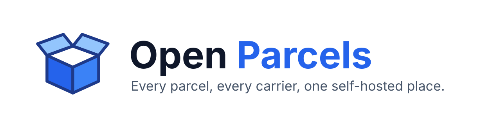

About 90 carriers
Tracking-number detection, carrier status tables and tracking links from the shared rules package. Sign in to carrier and shop accounts to pick up parcels automatically.

Self-hosted parcel and order tracking. One backend for every carrier, shop and mailbox, on your own hardware, with a Home Assistant integration built in.
Early development · 2.0.0-dev
Tracking-number detection, carrier status tables and tracking links from the shared rules package. Sign in to carrier and shop accounts to pick up parcels automatically.
Watches your mailbox over IMAP IDLE and recognises shipping and order mails with community-maintained rules.
Follows the courier on a map while a carrier offers live tracking. Positions are never stored as a trail.
Expected deliveries in a calendar view and as an ICS feed for any calendar app.
A custom integration with one device per carrier account, shop or mailbox, an entity per parcel, events, device triggers and services.
One small multi-arch image (amd64, arm64) for Docker, Unraid and a Home Assistant app on a Raspberry Pi. Read-only root, non-root user.
Generated from open-parcels-rules/data/carriers.yaml. Recognising a carrier's tracking numbers does not always mean a live lookup; see the server's plug-ins for which carriers it can query.
services:
open-parcels:
image: bluscream1/open-parcels:latest
restart: unless-stopped
ports:
- "3000:3000"
volumes:
- open-parcels-data:/data
read_only: true
tmpfs:
- /tmp
security_opt:
- no-new-privileges:true
cap_drop:
- ALL
volumes:
open-parcels-data:docker compose up -d.docker compose logs open-parcels.http://localhost:3000, enter the code and set the owner password./boot/config/plugins/dockerMan/templates-user/.
/data path, Apply.chown 1000:1000), or add --user 99:100 to Extra Parameters.The Home Assistant app runs the same image with ingress and announces itself to the integration. It is not published yet. Until it is, run the container on Docker or Unraid and point the integration at it.
https://github.com/open-parcels/open-parcels-ha as an Integration.read and write.The server and web UI: carrier plug-ins, mail parsing, scheduler, event stream, Docker image and Unraid template.
Shared knowledge: tracking-number formats, carrier status tables, delivery-date phrases and shipping-mail rules, with a TypeScript engine.
The Home Assistant integration: a device per source, an entity per parcel, live updates over the event stream.